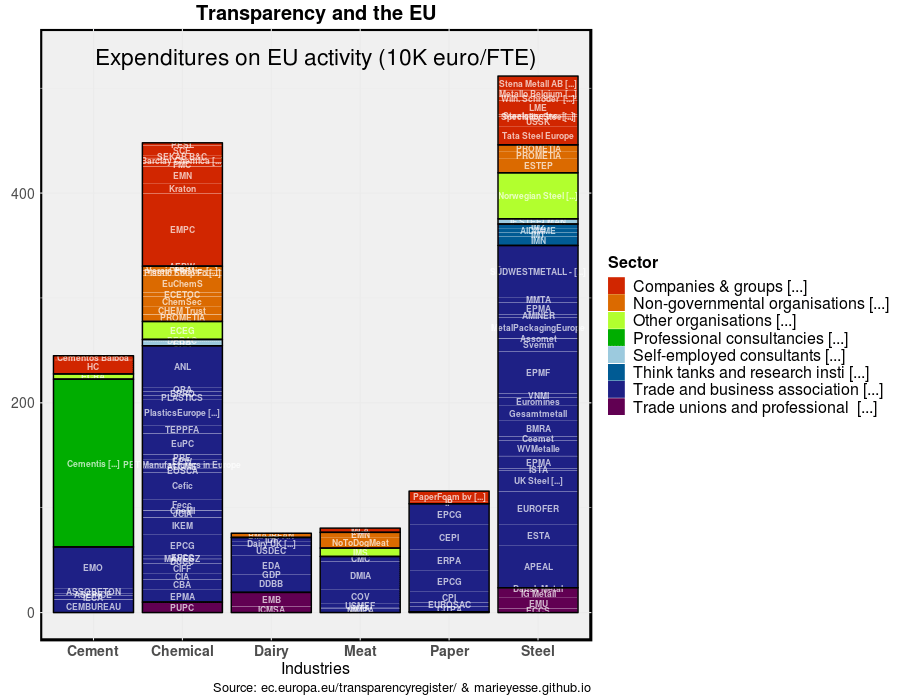

Having been involved in the REINVENT project since 2017, I have had the opportunity to deep-dive into the transition patterns of 5 basic industry sectors (Steel, Plastics, Pulp & Paper and Meat and Dairy). To figure out what else is involved with these few themes, I have started looking into which organizations are keeping themselves busy with these themes. I draw information on EU lobby groups from the EU Transparancy Register, which is a voluntary and open source database to which all active in EU lobby can register.
Figure: How many organizations exist per material?
The Steel and Chemical basic materials appear to be most represented in EU lobby. In a similar fashion I spot that Trade Associations are mostly involved in EU activity, followed by companies with most notably in the Chemical and Steel sector, while the engagement of NGO’s appears to be more sector specific (Chemicals and Steel to some degree). Consultancies appear to be solely involved with the Cement sector (Cementis).
Figure: Estimated number of employees per organization working on EU lobby activities
Figure: Estimated expenditures per organization on EU lobby activities
Or in a moving image: 
The EU Transparancy Register also allows to register the organizations’ field of interest. We can see some strong links to topics like climate, public, industry, food, environment. Weaker links are found for topics like security, safety, and a couple more. The picture has a rather star-like shape, implying that the basic material sectors mostly share similar interests.
Figure: The indicated fields of interest and interlinkages
In order to check out the (daily) talking points of several of these organizations, I selected a couple of specific basic material trade organizations and the top tiers deducted from the abovementioned figures. As such I have identified EUROFER_eu (Steel), CEMBUREAU (Cement), CEFIC (Chemicals), PlasticsEurope (Plastics), CEPI_Paper (paper), EDA_Dairy (Dairy) and FIL_IDF (Milk) as interesting to have a closer look at.
All of the organizations, except for the EDF_Dairy appear to be active on twitter. The week-long twitter activity shows that PlasticsEurope has been very active, mostly due to a conference. This also shows in the figure below, (showing #identiplast2019 to be the most used word). Other sectors have peaked also around March 8th, implyinga sharpening of communicative activity around special events.
In terms of tweets, we can also draw information on the topic of discussion. By counting how often a term is repeated, we can get a hunch of what is going on in Twitterland.
_Figure: number of tweets talking about European business associations
Despite some distortion in the number of times a word has prompted (which depends on how active an organization is on twitter), we can see that the Plastics industry makes the terms “recycling” and “waste” fly, the Cement sector is more eager to take up the words “opportunities” and their own products in tweets. The paper sector interestingly is the sole industry discussing “decarbonisation” in their communication.
Contact: mariesse.vansluisveld@pbl.nl